Interactive Glockenspiel (2016)
Hardware / Robotic Instruments
Arduino, Processing, Glockenspiel, Mallets, Solenoids
IMA Fall Show, NYU, Shanghai, China
Fifteen solenoids connected using an Arduino Mega are used to drive a robotic glockenspiel that a user can control wirelessly with their smartphone.
Twinkle Twinkle, Jingle Bells, Mozart K330, Canon, Chao Ming.
The glockenspiel can be controlled via a virtual keyboard, a beatpad, or a force touch pressure sensitive display. The pressure sensitive mode can create ordered chaos, a new way of experiencing the sounds that a glockenspiel can make. It can also play pre-programmed songs.
The songs in the demo are: Twinkle Twinkle, Jingle Bells, Mozart K330, Canon, Chao Ming.
Final Product Photos
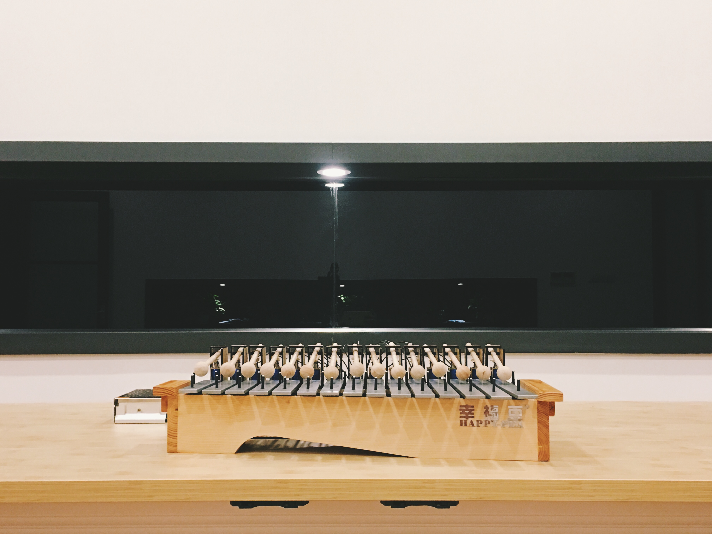
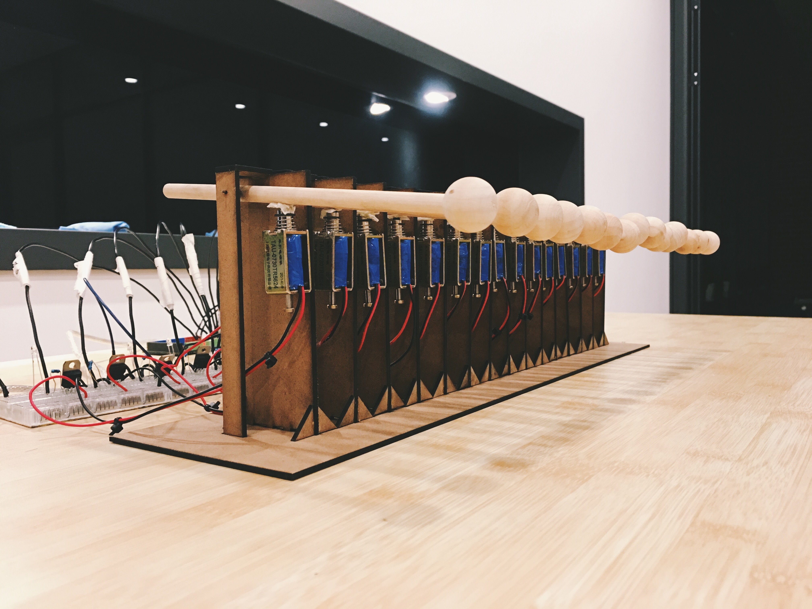
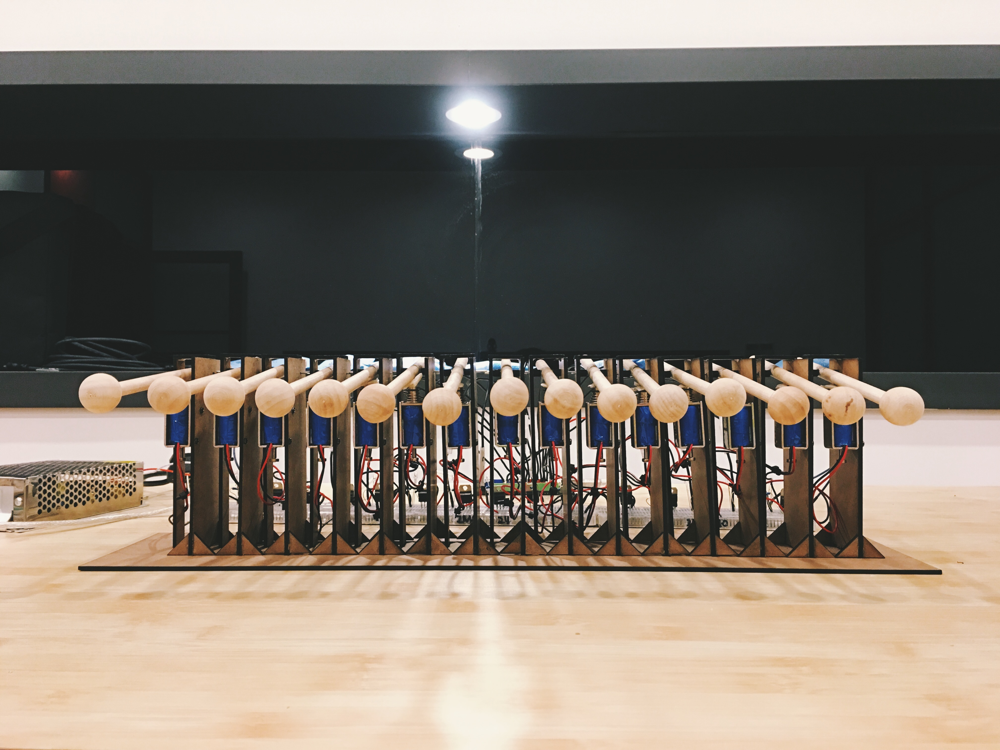
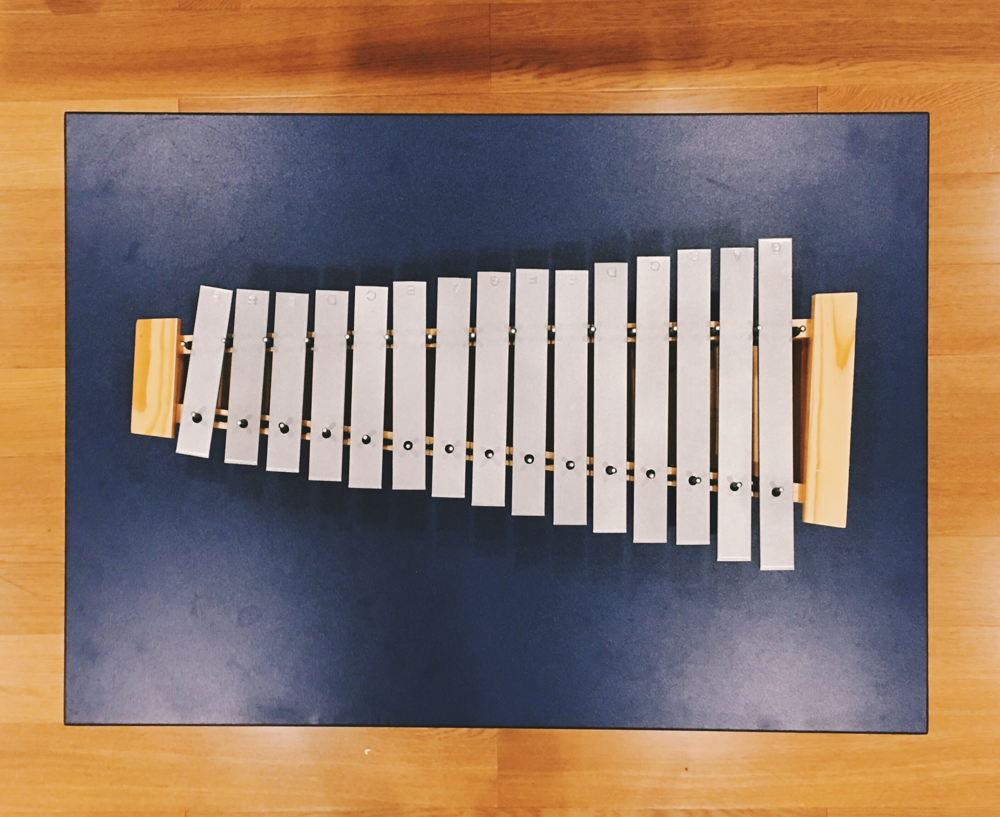
Documentation
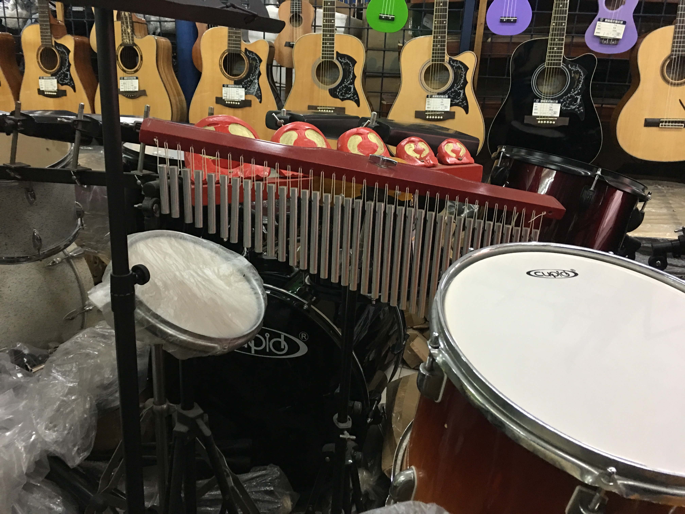
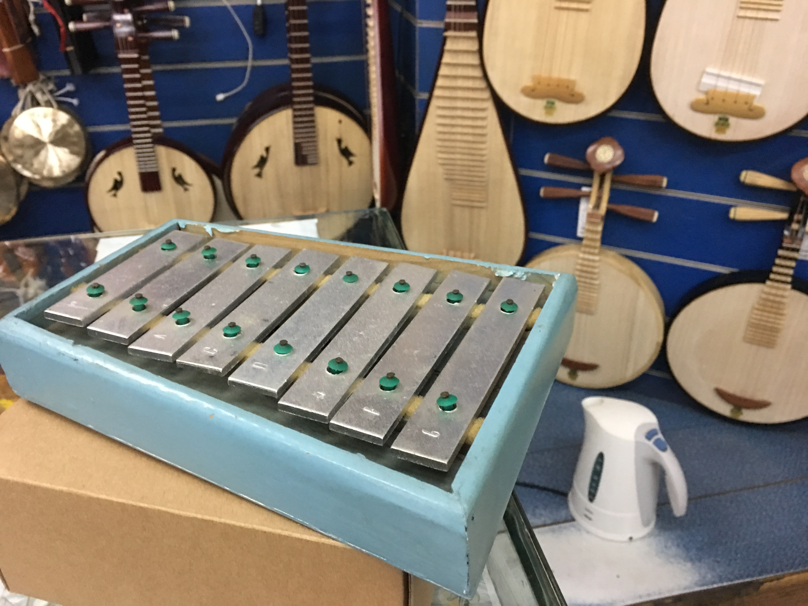
Looking for instruments at a music market near Jilin Road. An 8-note glockenspiel caught my eye.
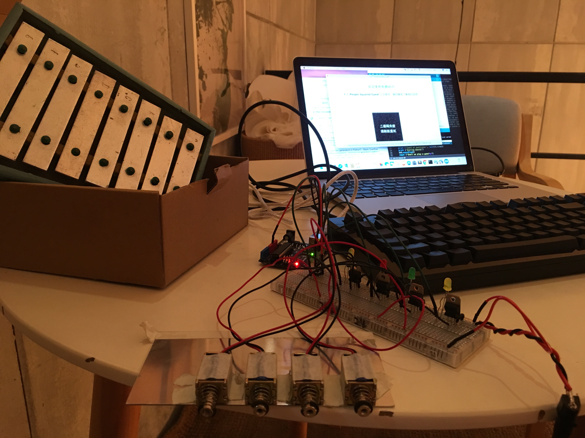
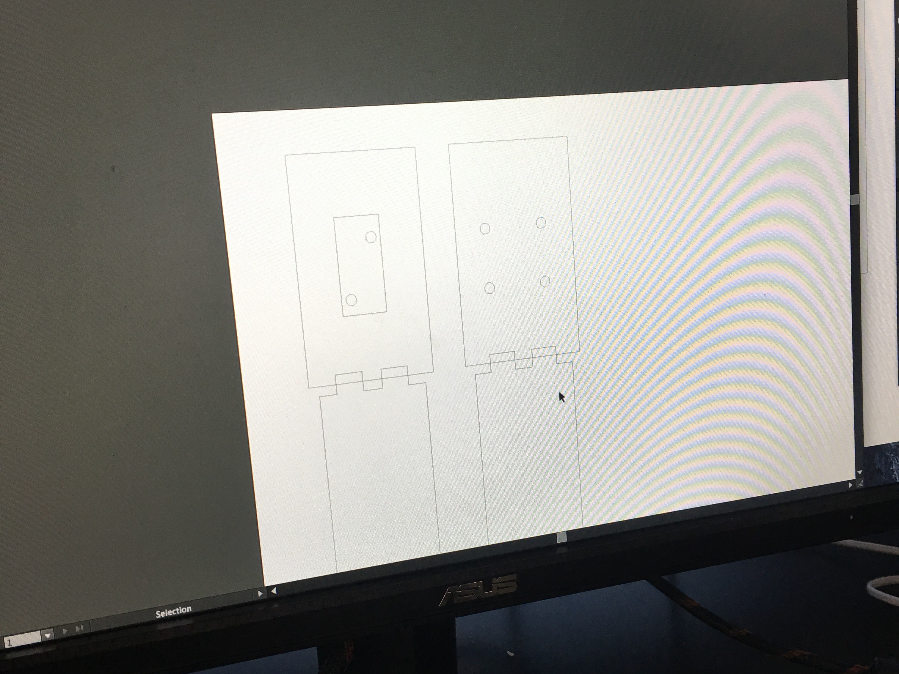
Wired up a row of solenoids using TIP120 transistors -- need a much larger external power source to provide power for more solenoids.
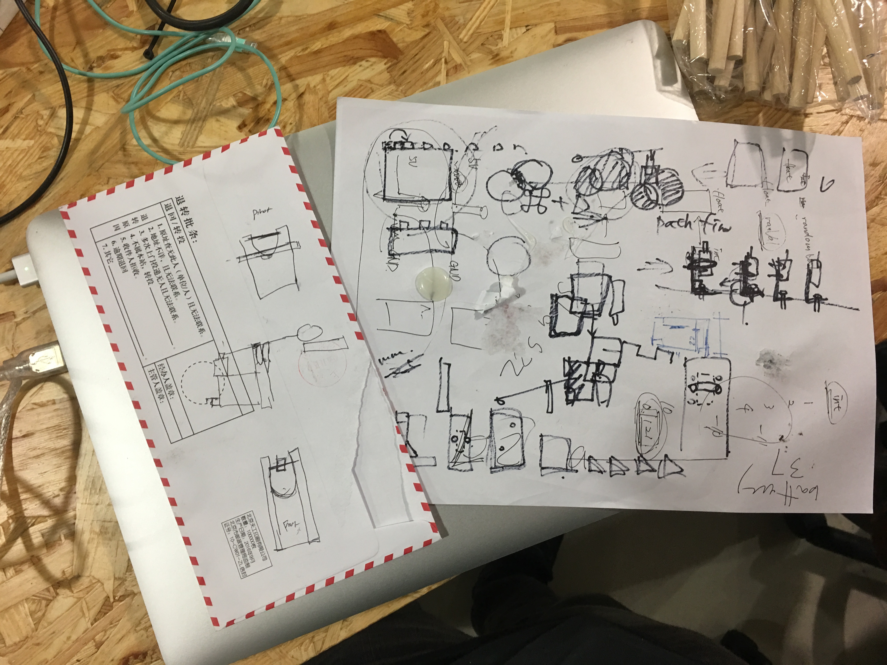
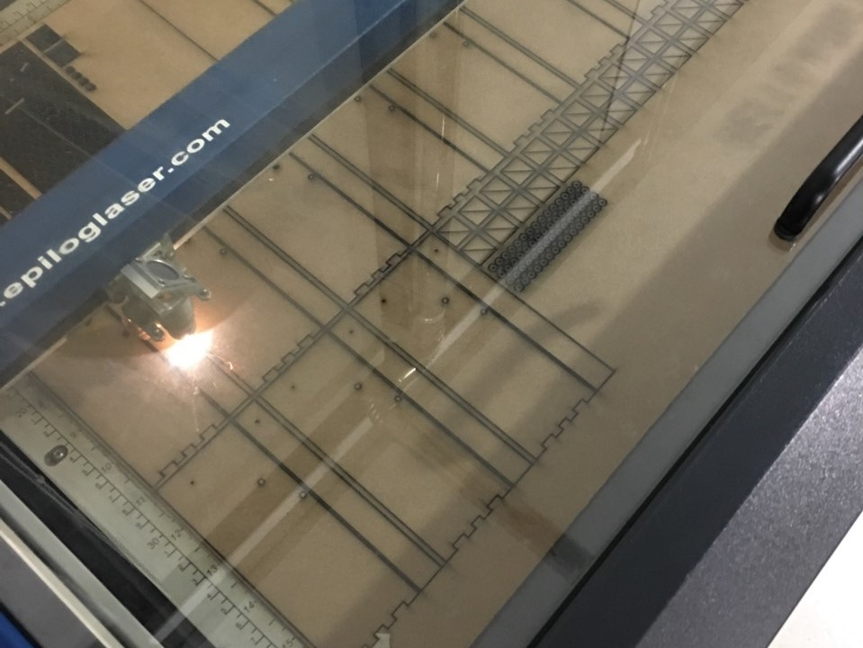
Experimenting with laser fabrication for mallet stand. This was the most time-consuming part and challenging part of the project, designing a mallet that can simulate mechanical motion (free movement up and down and constrained movement side to side) and be sturdy enough to hold a solenoid in place.
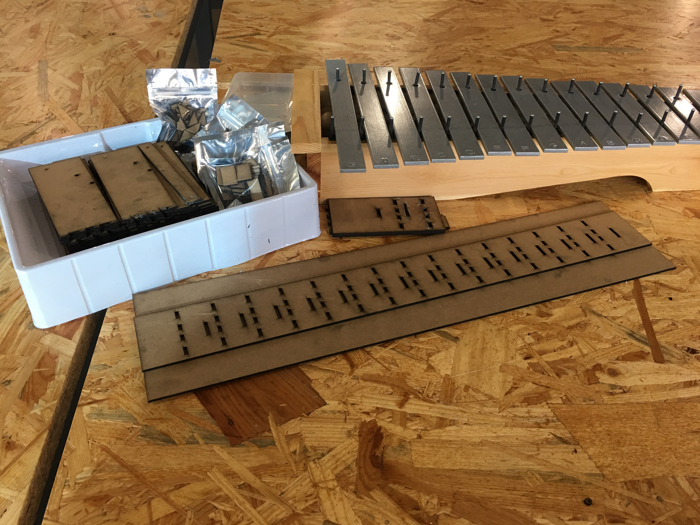
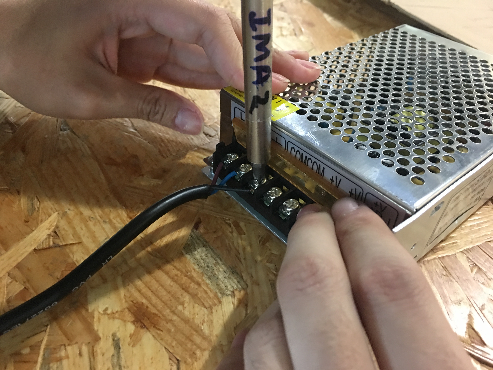
Assembling external power supply.
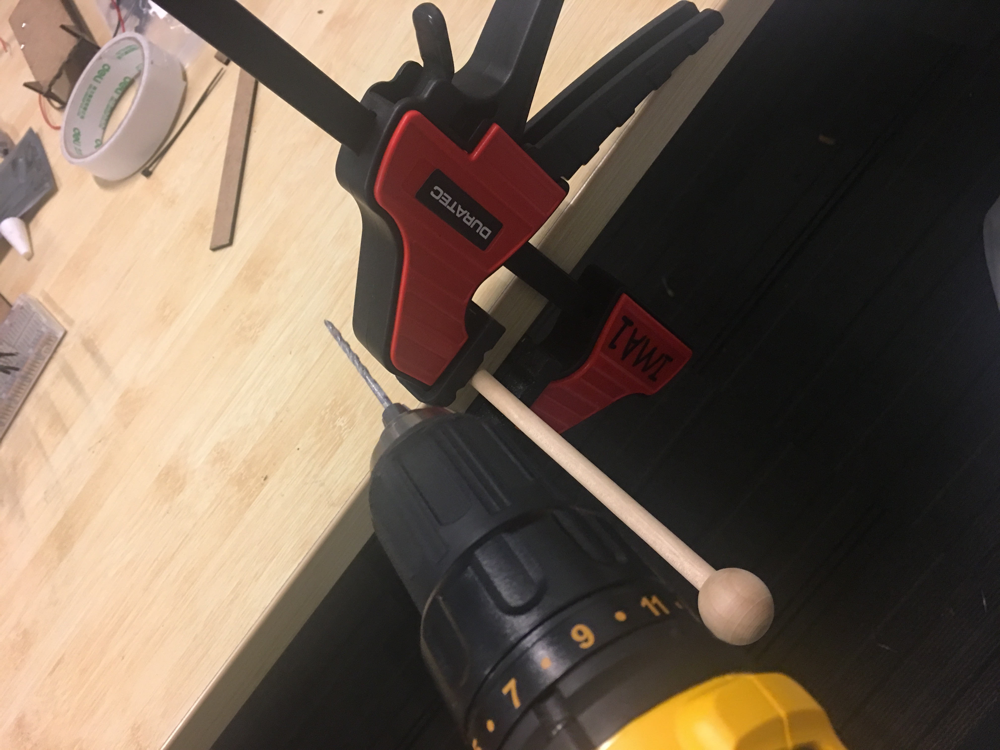
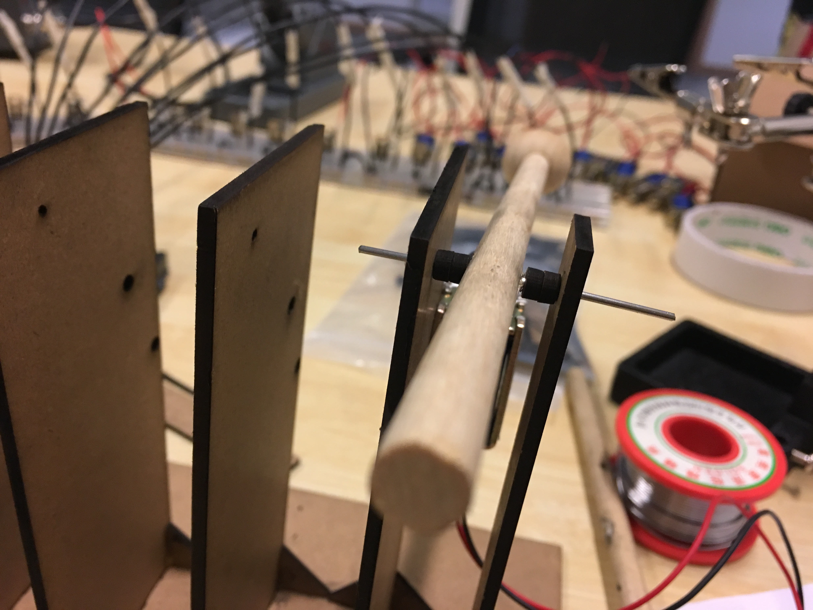
Drilling holes in wooden mallet and assembling mallet stands to hold mallet and solenoid.
Done!